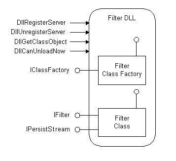

Filter handlers, which are implementations of the IFilter interface, scan documents for text and properties. Filter handlers extract chunks of text from these items, filtering out embedded formatting and retaining information about the position of the text. They also extract chunks of values, which are document properties. IFilter is the foundation for building higher-level applications such as document indexers and application-independent viewers.
This topic is organized as follows:
Microsoft Windows Search uses filters to extract the content of items for inclusion in a full-text index. You can extend Windows Search to index new or proprietary file types by writing filters to extract the content, and property handlers to extract the properties of files.
The IFilter interface is designed to meet the specific needs of full-text search engines. Full-text search engines like Windows Search call the IFilter methods to extract text and property information and add them to an index. Windows Search breaks the results of the returned IFilter::GetText method into words, normalizes them, and saves them in an index. If available, the search engine uses the language code identifier (LCID) of a text chunk to perform language-specific word breaking and normalization.
Windows Search uses three functions, described in the following table, to access registered filter handlers (implementations of the IFilter interface). These functions are especially useful when loading and binding to an embedded object's filter handler.
| Function | Description |
|---|---|
| LoadIFilter | Gets a pointer to the IFilter that is most suitable for the specified content type. |
| BindIFilterFromStorage | Gets a pointer to the IFilter that is most suitable for the content contained in an IStorage Interface object. |
| BindIFilterFromStream | Gets a pointer to the IFilter that is most suitable for a specified class identifier (CLSID) retrieved from a stream variable. |
The IFilter interface has five methods, described in the following table.
| Method | Description |
|---|---|
| IFilter::Init | Initializes a filtering session. |
| IFilter::GetChunk | Positions IFilter at the beginning of the first or next chunk and returns a descriptor. |
| IFilter::GetText | Retrieves text from the current chunk. |
| IFilter::GetValue | Retrieves values from the current chunk. |
| IFilter::BindRegion | Retrieves an interface representing the specified portion of object. Reserved for future use. |
Windows Search runs IFilters in the Local System security context with restricted rights. In this IFilter host isolation process, a number of rights are removed:
The removal of these rights means the IFilter interface does not have access to the disk system or network or to any user interface or clipboard functions. Furthermore, the isolation process runs under a job object that prevents child processes from being created and imposes a 100 MB limit on the working set. the IFilter interface host isolation process increases the stability of the indexing platform, due to the possibility of incorrectly implemented third-party filters.
[!NOTE]
Filter handlers must be written to manage buffers, and stack correctly. All string copies must have explicit checks to guard against buffer overruns. You should always verify the allocated size of the buffer. You should always test the size of the data against the size of the buffer.
IFilter DLLs implement the IFilter interface to enable a client to extract text and property value information from a file type, class, or perceived type. The Windows Search filtering process SearchFilterHost.exe binds to the IFilter that is registered for the class, perceived type, or name extension of the item.
Each IFilter is a DLL file that implements an in-process Component Object Model (COM) server to supply the specified filtering capabilities. The following figure illustrates shows the overall structure of a typical IFilter DLLs. A more complex example could implement more than one IFilter class.

Filters must be written in native code due to potential common language runtime (CLR) versioning issues with the process that multiple add-ins run in. In Windows 7 and later and later, filters written in managed code are explicitly blocked.
The class of the IFilter DLL is registered under the PersistentHandler registry key. The following example, for HTML files, illustrates how to find the IFilter DLL for an HTML document. This example follows logic similar to that used by the system to find the IFilter associated with an item.
Value1. If that entry already exists, then skip to step 4 of this procedure and use Value1 in that key. The values are of type REG_SZ. \HKEY_LOCAL_MACHINE
   SOFTWARE
      Classes
         .htm
            PersistentHandler
               {EEC97550-47A9-11CF-B952-00AA0051FE20}
Value2. \HKEY_LOCAL_MACHINE
   SOFTWARE
      Classes
         htmlfile
            = Class for WWW HTML files
            CLSID
               {25336920-03F9-11CF-8FD0-00AA00686F13}
Value2 determined in step 2, find the PersistentHandler for the \HKEY_LOCAL_MACHINE\SOFTWARE\Classes\CLSID\Value2 entry. Let this key be Value3. \HKEY_LOCAL_MACHINE
   SOFTWARE
      Classes
         htmlfile
            = Class for WWW HTML files
            PersistentHandler
               {EEC97550-47A9-11CF-B952-00AA0051FE20}
Value1 and Value3, find the IFilter Persistent Handler GUID for the document type. The value under the registry entry \HKEY_LOCAL_MACHINE\SOFTWARE\Classes\CLSID\Value1 or 3\PersistentAddinsRegistered\ 89BCB740-6119-101A-BCB7-00DD010655AF"/> yields the IFilter PersistentHandler GUID for this document type. Let this key be Value4. In this example, the IFilter interface GUID is 89BCB740-6119-101A-BCB7-00DD010655AF. HKEY_LOCAL_MACHINE
   SOFTWARE
      Classes
         {EEC97550-47A9-11CF-B952-00AA0051FE20}
            = HTML File Persistent Handler
Data type REG_SZ
PersistentAddinsRegistered
{89BCB740-6119-101A-BCB7-00DD010655AF}
Data type         REG_SZ
default = {E0CA5340-4534-11CF-B952-00AA0051FE20}
[!NOTE]
In this example, the IFilter DLL for HTML documents is nlhtml.dll.
The LCID of text can change within a single file. For example, the text of an instruction manual might alternate between English (en-us) and Spanish (es) or the text may include a single word in a language other than the primary language. In either case, your IFilter must begin a new chunk each time the LCID changes. Because the LCID is used to choose an appropriate word breaker, it is very important that you correctly identify it. If the IFilter cannot determine the locale of the text, then it should return an LCID of zero with the chunk. Returning an LCID of zero causes Windows Search to use Language Auto-Detection (LAD) technology to determine the locale ID of the chunk. If Windows Search cannot find a match, it defaults to the system default locale (by calling the GetSystemDefaultLocaleName Function function). For more information, see IFilter::GetChunk, CHUNK_BREAKTYPE, CHUNKSTATE, and STAT_CHUNK.
If you control the file format and it currently does not contain locale information, you should add a user feature to enable proper locale identification. Using a mismatched word breaker can result in a poor query experience for the user. For more information, see IWordBreaker.
[!NOTE]
Filters are associated with file types, as denoted by file name extensions, MIME types or CLSIDs. While one filter can handle multiple file types, each type works with only one filter.
Best Practices for Creating Filter Handlers in Windows Search
Returning Properties from a Filter Handler
Filter Handlers that Ship with Windows